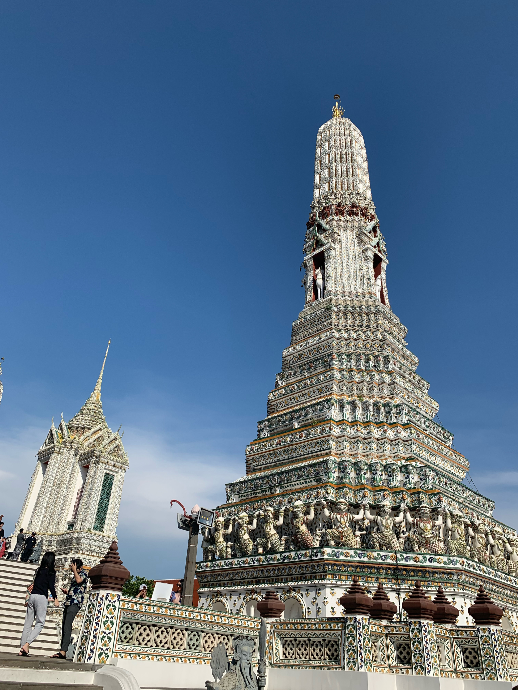
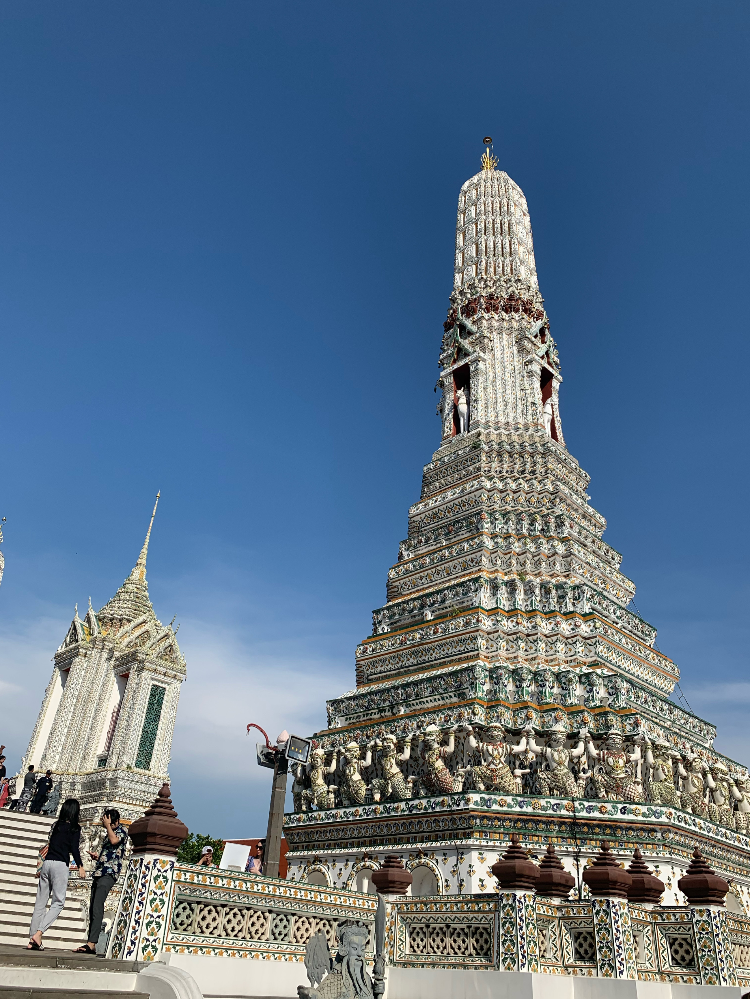

Click here for more information before visiting Phuket.
- PHUKET
- Phuket is an island off of Thailand. One of the most popular places to
stay is Patong Beach where there are plenty of places for massages, partying,
tasting new foods, and exploring the beach! On the beach they offer parasailing
and other activities. There’s a large street called Bangla Road which is a
strip of restaurants and souvenir shops during the day and clubs and shops at
night! At the end of the road is the beach which is always warm. While in
Phuket, you can easily take an inexpensive day trip to surrounding islands.
For example, I went to Koh Phi Phi, Monkey Island, and James Bond Island among
others.
Click here for more information before visiting Phuket. - BANGKOK
- Bangkok is the most iconic city of Thailand, and for good reason. Here you
can explore the most famous temples of Thailand and go to authentic markets to
get more of a genuine perspective on Thailand. My favorite temple was Wat Arun.
You can also get discounted tickets
at your hotel for the zoo and floating markets. At night they have sky bars with
beautiful views of the city.
Click here for more information before visiting Bangkok. - CHIANG MAI
- Chiang Mai is the rural area in the north of Thailand that many tourists
usually skip. However, the scenery is beautiful and it is the best place to
zip line. It also has sanctuaries where you can visit elephants and tigers
with the knowledge that they are in safe environments.
Click here for more information before visiting Bangkok.